Lightsail workshop: host a static website
Publish a static website using an Amazon Lightsail bucket and distribution. Visitors will see your homepage at an HTTPS address such as https://abc123.cloudfront.net/, without adding /index.html.
You will use the distribution's AWS-provided address. You do not need to buy a domain or configure DNS.
Before you start
- Have an AWS account or the workshop sign-in details provided by your instructor.
- Use an identity with permission to manage Lightsail buckets and distributions.
- Prepare your HTML, CSS, JavaScript, and images, including a homepage named
index.html. - Use the Region and resource plans specified by your instructor, if provided.
Cost: Buckets and distributions are billable resources. Review the plans shown in the console and Lightsail pricing. Follow the cleanup steps when you finish.
1. Sign in to the AWS Management Console
Use the sign-in method supplied for your account.
Workshop or organization access
- Open the workshop sign-in link
- Sign in with the supplied credentials.
See AWS sign-in URLs for help identifying your portal.
IAM user access
- Open the AWS Management Console.
- Choose the IAM user sign-in option if asked.
- Enter your account ID (519102532869), IAM user name, and password.
- Choose Sign in and complete MFA if enabled.
Your administrator may provide an account-specific URL that already includes the account ID. See AWS IAM user sign-in instructions.
Checkpoint: You can see Console Home. Check the account menu to confirm you are using the account assigned to the workshop.
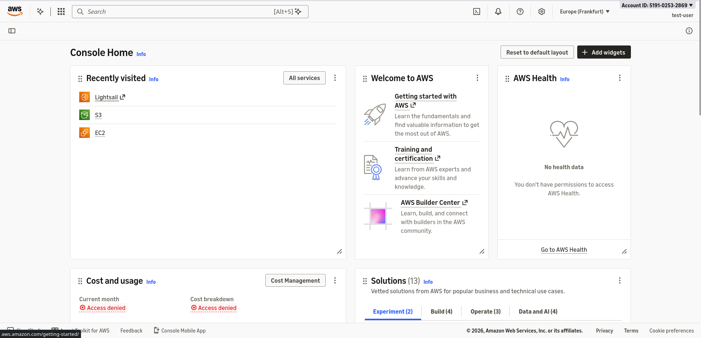
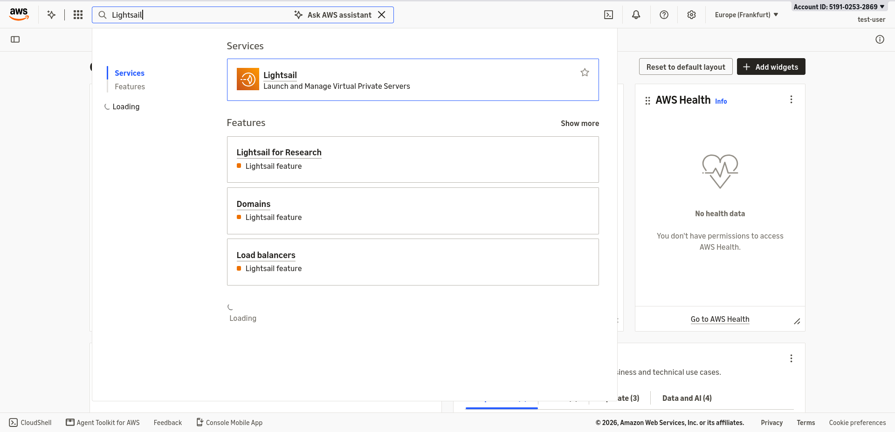
2. Open the Lightsail dashboard
- In the search bar at the top of the AWS console, enter
Lightsail. - Select Lightsail from the service results.
- Alternatively, open the Lightsail console directly after signing in.
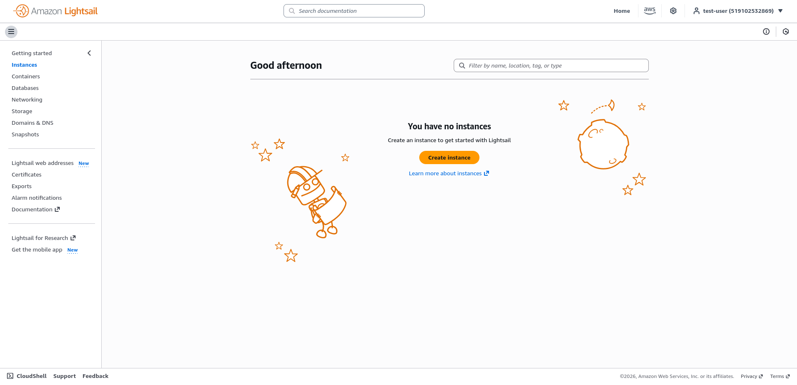
Checkpoint: The dashboard shows navigation options including Storage and Networking.
3. Prepare your website files
Keep index.html at the top level of the files you will upload. For example:
website/
index.html
css/
styles.css
images/
logo.png
Upload the contents of website/, so the bucket contains index.html, css/styles.css, and images/logo.png. Uploading the enclosing folder would put your homepage at website/index.html instead.
If you do not have a website, save this example as index.html in a text editor. Ensure the filename is not index.html.txt.
<!doctype html>
<html lang="en">
<head>
<meta charset="utf-8">
<meta name="viewport" content="width=device-width, initial-scale=1">
<title>My Lightsail website</title>
</head>
<body>
<h1>Hello from Amazon Lightsail!</h1>
<p>I published this static website during the workshop.</p>
</body>
</html>
For a site generator, upload its generated website files. For MkDocs, these are the contents of the site/ directory produced by mkdocs build.
4. Create a Lightsail bucket
A bucket stores your website files.
- In Lightsail, choose Storage in the navigation pane.
- Choose Create bucket.
- Select the workshop's AWS Region, or one close to your audience.
- Select the storage plan appropriate for the workshop.
- Enter a name, such as
lightsail-workshop-yourname-1234. If unavailable, choose another name. - Review your choices and choose Create bucket.
- Open the bucket and leave its access permissions set to All objects are private.
Record the bucket name and Region for the distribution setup. See AWS bucket creation instructions.
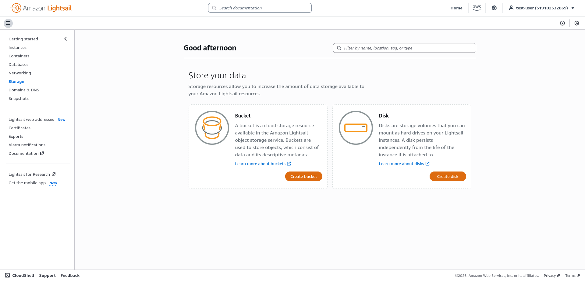
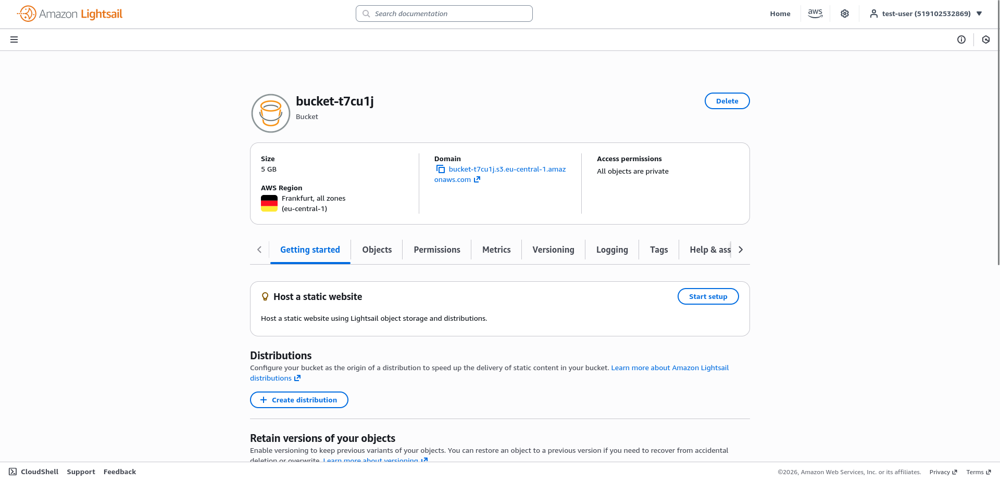
5. Upload your website
- Open your bucket and choose the Objects tab.
- At the top level of the object list, choose Upload and select your website files, or drag and drop them into the object list.
- Include asset folders such as
css/andimages/, preserving their structure. Drag those folders into the object list if needed. - Wait until the uploads finish.
- Confirm that
index.htmlappears directly at the bucket's top level.
For example, <link rel="stylesheet" href="css/styles.css"> requires an uploaded object at css/styles.css. File names and capitalization must match your HTML references. Upload extracted files rather than a ZIP archive.
6. Create a distribution and set the homepage
A distribution fetches files from your bucket, caches them, and serves them to visitors.
- Choose Networking in the Lightsail navigation pane.
- Choose Create distribution.
- Under Choose your origin, select your bucket's Region, then select the bucket.
- Turn on Enable private origin access so the distribution can read the private files.
-
Under Hosting settings, set Default root object to exactly:
index.html -
Choose a distribution plan suitable for the workshop.
- Enter a distribution name, such as
workshop-website. - Leave optional custom domain or web address setup unused; the default distribution address is sufficient.
- Review the settings and choose Create distribution.
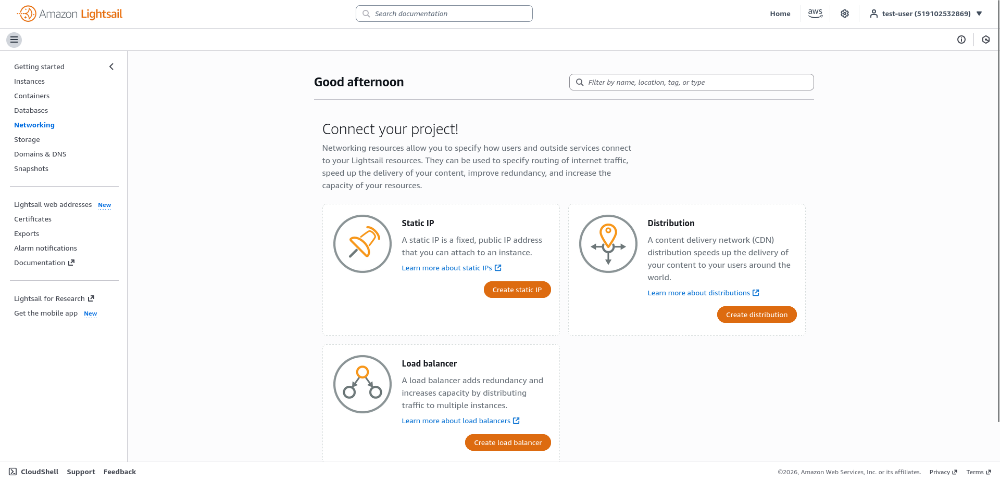
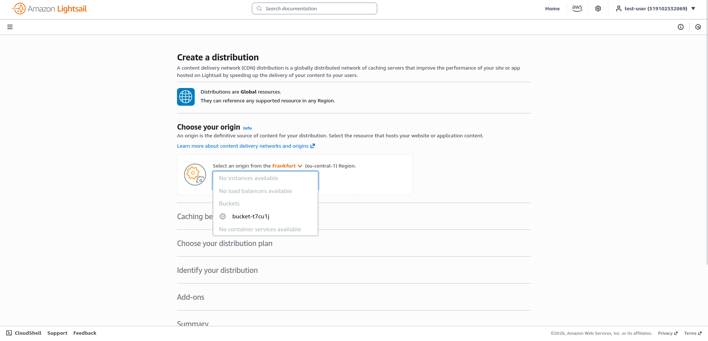
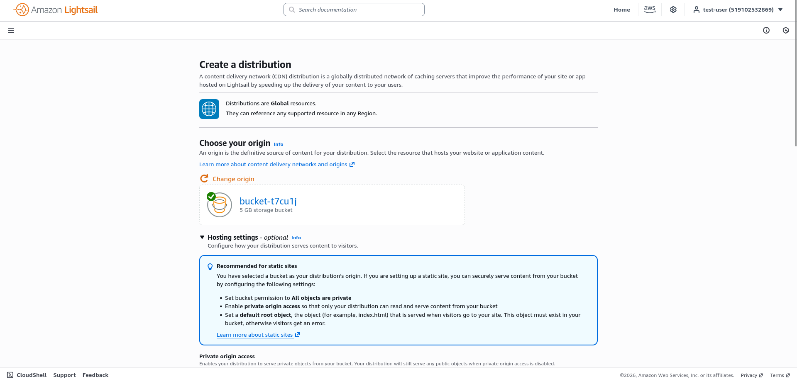
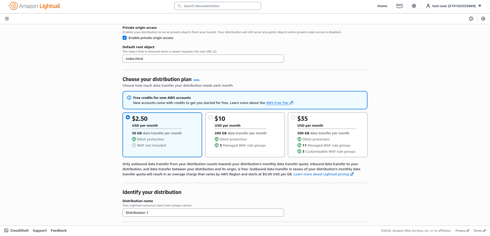
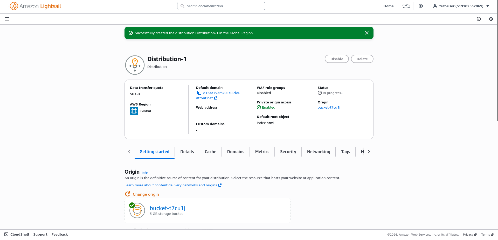
Do not skip the default root object. It makes a request for / return your uploaded index.html. Enter the filename without a leading slash.
The bucket can remain private, but files served through the distribution are publicly accessible. Upload only content intended for publication. See AWS's static website tutorial and distribution creation guide.
7. Test the website at its root URL
- Open the distribution's management page.
- Wait for its status to become Deployed. Refresh the page while deployment completes.
- Find and copy the Default domain.
-
Open it in your browser with
https://and a trailing/, for example:text https://abc123.cloudfront.net/This is an example; use the domain shown for your own distribution.
-
Confirm your homepage renders while the address ends at
/, without/index.html. - Check that any styles, images, and links work too.
Success: Your homepage is available at the distribution's root URL. Share that HTTPS address with others.
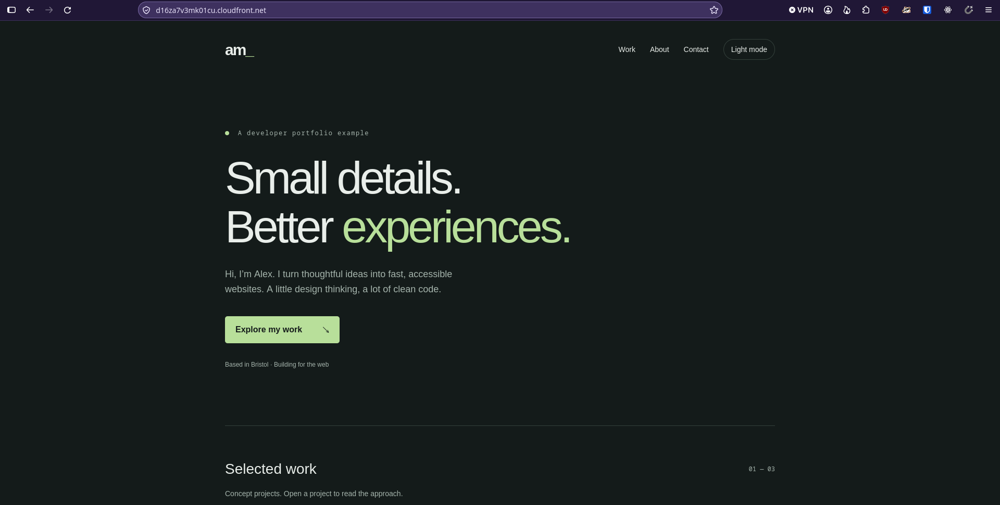
8. Update your website
- Edit your local files.
- Upload the changed files to the same bucket paths, replacing existing objects when prompted.
- On the distribution's management page, choose Reset cache.
- After the reset completes, refresh your browser. Use a hard refresh if it still shows an older copy.
If you don't see changes on your browser, enter ctrl+shift+R
AWS covers cache resets and common errors in its static website troubleshooting guide.
Troubleshooting
| Problem | What to check |
|---|---|
/index.html works, but / fails |
Set Default root object to index.html, save any correction, and wait for deployment. |
| Access denied | Check that private origin access is enabled, the distribution is deployed, and index.html exists at the bucket's top level with matching capitalization. |
| Bucket missing from the origin list | Check the selected Region and AWS account. |
| Images or styles missing | Compare paths in your HTML with the uploaded folders and capitalization. |
| Old content appears | Reset the distribution cache, wait for completion, and hard refresh the browser. |
| AWS denies a console action | Ask your instructor or administrator to check your assigned permissions. |
9. Clean up after the workshop
Remove resources you no longer need to avoid ongoing charges. Keep local copies of files you want to retain.
- In Networking, open your workshop distribution.
- Choose the Delete tab, then Delete distribution, and confirm. Wait until deletion completes.
- In Storage, open your workshop bucket.
- Open the tab menu's ellipsis (⋮), choose Delete, then Delete bucket.
- Read and acknowledge the prompts, including the prompt about objects still in the bucket, and confirm deletion.
- Confirm both workshop resources have been removed.
Deleting the bucket permanently removes its contents, including stored object versions. See AWS's instructions for deleting a distribution and deleting a bucket.